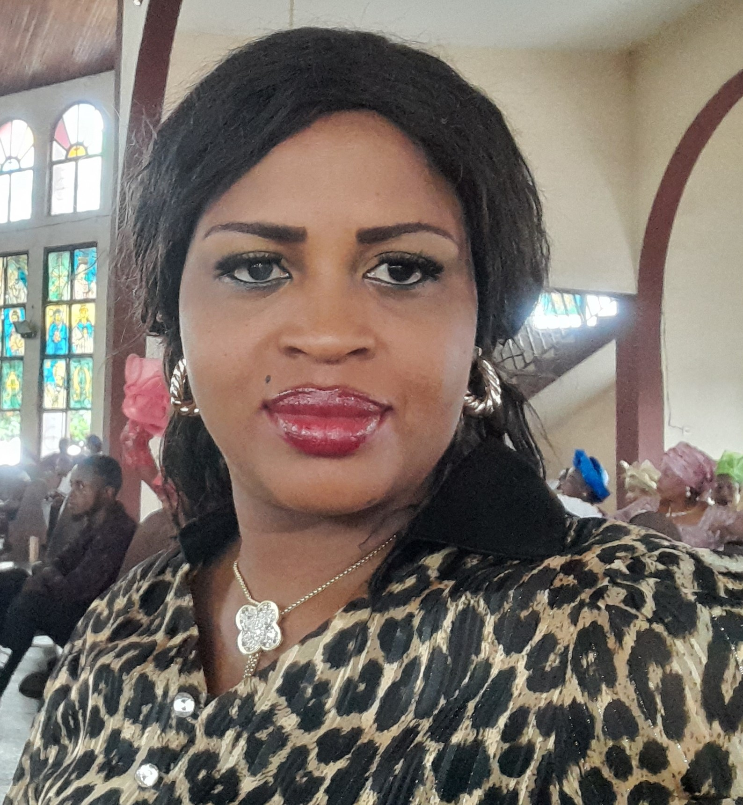

A statement/ An Introduction
This site is a Portfolio Assignment to test
our knowledge and understanding of what we
were taught within the week.
Attempting to complete the assignment will determine and assess our knowledge so far and the grades that will be assigned to us.
About My Self
My name is Cynthia Enweonwu-Arinze, a tech enthusiast.
I am passionate about becoming a sort-after Software Engineer.
I am so grateful and happy that I am part of this scholarship
because it is a stepping stone in achieving one of my life's goals.
I am a Sustainable Development Goal (SDG) Advocate with over 4 years knowledge and strategies on mainstreaming programmes and activities with SDGs with the objective of amplifying the SDGs and its achievements.